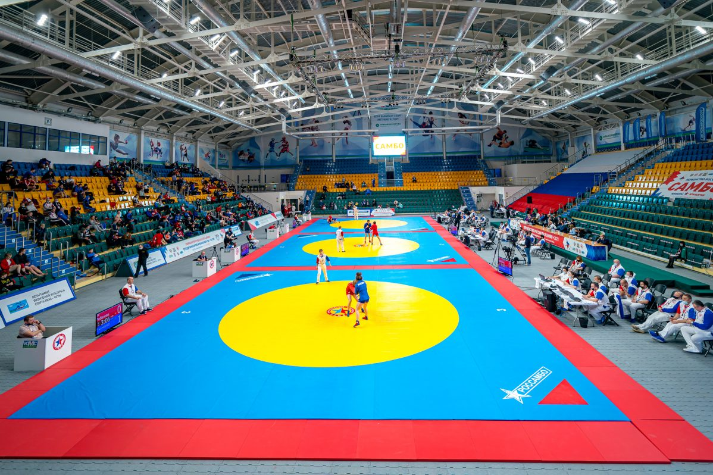
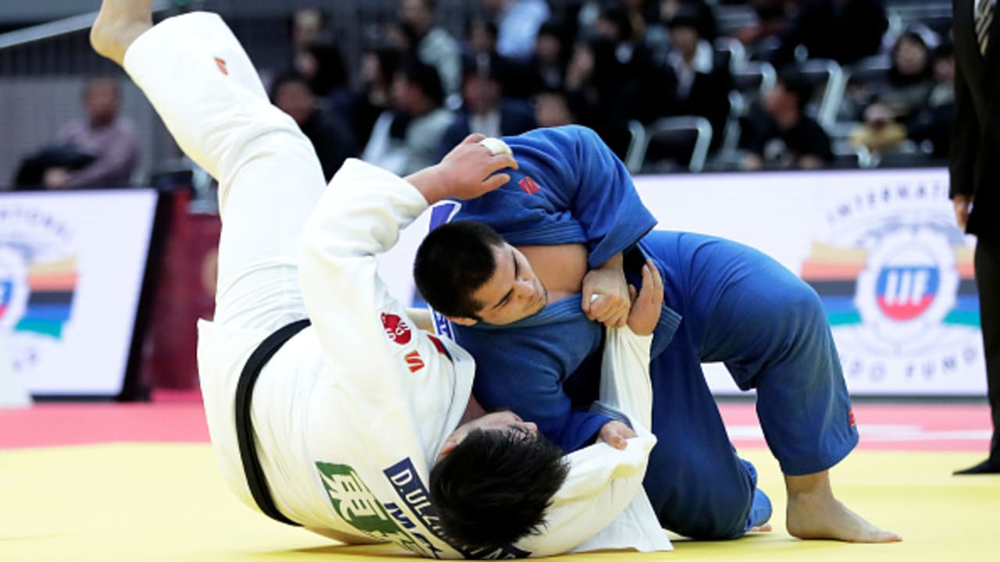

Учебные занятия 9.30-15.15,
Самоподготовка 17.30-18.00,
Свободное время 18:00-21:00.
Самбо — расшифровывается, как «САМооборона Без Оружия».
Ее техника состоит из приемов разных единоборств, которые были распространены еще во времена Советского Союза, а также из методов японского дзюдо. Поединок самбо «вязкий», кажется, что ударов нет совсем, больше захваты, от которых противнику должно быть невыносимо больно. Такие захваты за руки и ноги выполняются быстро из любого положения. Восточные боевые виды борьбы известны своим налетом духовности, но в самбо это отсутствует. В этом виде борьбы спортсмен всесторонне развивается, воспитывая в себе лучшие моральные качества. Мастера, которые стояли у истоков самбо, старались сделать не спортсменов, а замечательных людей — крепких, сильных духом и телом. 
Дзюдо — это красивая разновидность борьбы.
Пришел этот вид спорта к нам из Японии, и сразу же завоевал популярность среди людей, которые посвятили такому виду спорта всю свою жизнь. Поединок смотрится эффектно: спортсмены в белых кимоно (костюм дзюдоиста) с огромной силой бросают друг друга на пол, демонстрируя всем вокруг свою мощь, технику и ловкость. Всего одно движение может отправить противника в принудительный полет, который заканчивается болезненным приземлением на пол. Красота и зрелищность этого вида спорта сделали его популярным в нашей стране. 